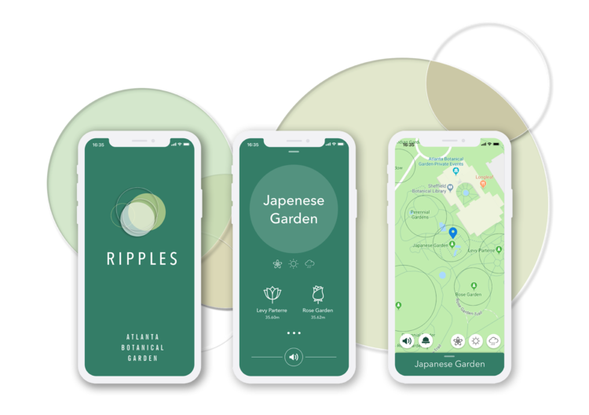
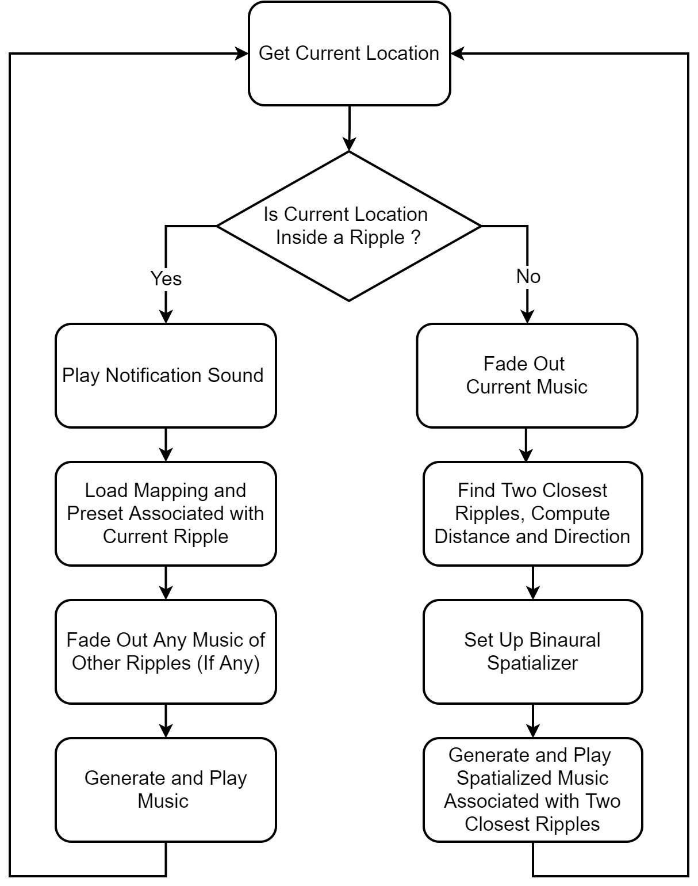
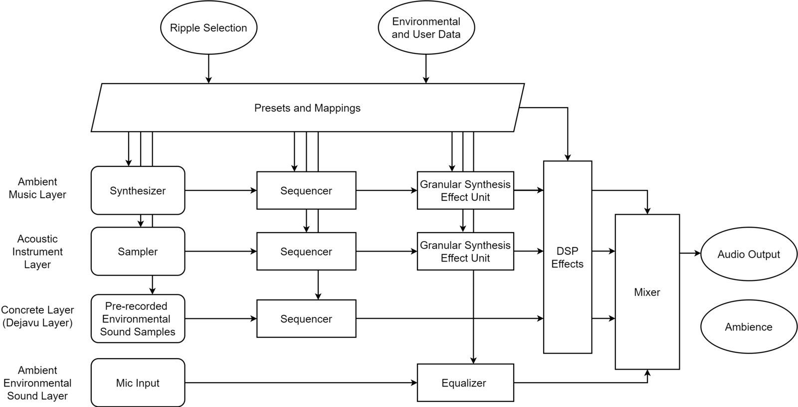

Ripples: An Auditory Augmented Reality iOS Application for the Atlanta Botanical Garden
Abstract
This paper introduces “Ripples”, an iOS application for the Atlanta Botanical Garden that uses auditory augmented reality to provide an intuitive music guide by seamlessly integrating information about the garden into the visiting experience. For each point of interest nearby, “Ripples” generates music in real time, representing a location through data collected from users’ smartphones. The music is then overlaid onto the physical environment and binaural spatialization indicates real-world coordinates of their represented places. By taking advantage of the human auditory sense’s innate spatial sound source localization and source separation capabilities, “Ripples” makes navigation intuitive and information easy to understand.
Author Keywords
Auditory Augmented Reality, Environment Musification
CCS Concepts
•Applied computing→Sound and music computing; •Human-centered computing→Mixed / augmented reality;
Introduction
The Atlanta Botanical Garden provides paper maps to help visitors navigate their surroundings. However, the information on the map is not very legible. Many points of interest are close to one another, making the map hard to read. Moreover, constantly checking the map can distract from the experience. To provide a more intuitive guide and encourage users to explore new areas of the garden, we introduce “Ripples”, an auditory augmented reality (AR) iOS application that guides visitors through music.
The ideal of AR is the integration of virtual objects into the physical world. Accordingly, an auditory AR application integrates acoustic virtual objects into the real-world environment. Objects without intrinsically produced sound are sonified with a spatialized audio system that corresponds to real-world coordinates. In this way, auditory AR reveals additional information about the object and the environment [1].
“Ripples” employs auditory AR to enable the user to learn the environment through music. It takes environmental and user data collected by users’ smartphones to generate music that evolves during their visit. To better blend the generated music with the environment, “Ripples” also introduces pre-recorded, geo-tagged, environmental sound samples into the music when they revisit certain places. “Ripples” serves as a navigational tool through the binaural spatialization of generated music that corresponds to the two closest points of interest, creating an aural guide towards those locations. Finally, to help users attend to environmental sounds they might otherwise ignore, “Ripples” augments and emphasizes certain sounds by processing incoming ambient audio through location-based custom equalization.
Related Works
Previously, researchers and artists have developed several locative audio walk experiences. For example, The Rough Mile [2] project and locative-aware album/iOS application The National Mall1 both feature geo-tagged audio/music segments that are triggered at specific locations. However, these projects use pre-recorded music that do not respond to environmental elements dynamically. As the environment constantly changes, these audio experiences might not fully bond with the environment. Other researchers have explored introducing environmental factors into audio/music generation. For example, the Sonic City [3][4] project is a wearable system that collects environmental and user data to create electronic music in real time based on the user’s interactions with the urban environment. UrbanRemix [5] is a collaborative locative sound project that allows users to record and share geo-tagged sounds through a smartphone application and later remix these sounds into compositions through a web interface. The iOS application RJDJ2 processes environmental sounds by listening to the surrounding environment through a microphone and harmonizing the audio to deliver an augmented listening experience. As geographic and environmental data become increasingly accessible through evolving technologies, the concept of auditory AR is being defined and built. For instance, Microsoft proposed an auditory AR system for the visually impaired that uses computer vision to identify high-level features of real-world objects and sonifies these objects at their real-world coordinates using spatialized 3D audio synthesis. “Ripples” further expands the locative-aware audio experience by combining auditory AR concepts with environment-based music generation techniques to create an artistic guide that enhances the experience of visiting the Atlanta Botanical Garden.
DESIGN
User Interface


Figure 1
Ripples User Interface, From Left to Right, Launch Screen, Information View, Map View
Although there is no visual AR in “Ripples”, there is a visual user interface (UI) that serves as an aid for the user unaccustomed to relying solely on aural information for navigation. It has a simple design, with only essential information displayed so as not to overshadow the audio. The UI was developed based on the OverlayContainer3, a UI library written in Swift. It contains three screens (Figure 1), the launch screen, information view, and map view. The launch screen lights up after startup, then automatically switches to the map view where points of interest are displayed. These are presented in circles of different sizes and thus were named ripples. The bottom green panel can be swiped up to reveal the information view, displaying essential details about the current ripple. While using the application with headphones, the user can explore the garden with only audio guidance or hold their smartphone in their hand to use both audio and visual information.
System Mechanism


Figure 2
System Flow Chart
The ripple mechanism works as follows: The system continuously collects location information through users’ smartphones. Whenever their geographic coordinates change, the system checks if they are currently inside a ripple—a point of interest. If so, the application plays a notification sound, loads predefined audio generation mappings and sound engine presets associated with the current ripple, and generates audio using environmental and user information collected in real time. When outside a ripple, the music fades and finds nearest ripples. A weight table is then applied to determine which two ripples the user should go to next. The system computes the direction and distance to each ripple and this information is used to set up the binaural spatializer. To integrate the virtual space into the physical world, music associated with ripples (acoustic virtual objects) is then generated and played through the spatializer corresponding to the ripples’ real-world coordinates. The user can follow the direction of the music and head to the next ripple. “Ripple” takes advantage of the innate spatial sound source localization and separation capabilities of the human auditory system. The navigation is intuitive and naturally integrates the virtual world (the information layer) with the real world, making information easy to understand.
Sound Engine


Figure 3
Sound Engine
The sound engine was developed with AudioKit 4.64. There are five types of input for audio/music generation: 1) the location data, collected through iPhone GPS sensors and the Google Map API5 such as GPS coordinates, 2) time data, including the time of day and season of the year, 3) weather data, such as current weather and temperature, 4) user data, including heading direction and walking pace, and 5) microphone input. Ambient music is generated to match the organic atmosphere of the garden. Input data that slowly changes over the course of the visit is used so that the generated ambient music gradually evolves.
The sound engine has four layers, ambient music, acoustic instrument, concrete, and ambient environmental sound (Figure 3). For the first two layers, environmental and user data are mapped onto parameters of the synthesizer and sampler and control them in real time. The output is then fed into a granular synthesis effect unit. Environmental and user data are also used to generate musical sequences. All mappings and sequence generating algorithms are carefully designed for each ripple to ensure the generated music is well integrated with the characteristics of the ripple, ensuring they are aurally distinct. The concrete layer, also known as the dejavu layer, introduces geo-tagged environmental sound samples we previously recorded in the garden. A sample is triggered by revisiting a certain place, creating a virtual entity that does not currently exist in the environment but intrinsically belongs to the space, thus naturally blending the virtual world with the real world. For instance, when revisiting the Children’s Garden, users will hear previously recorded children speaking and laughing. The ambient environmental sound layer also takes incoming ambient audio signals from the microphone and processes them through the equalizer. The equalizer’s parameters change according to environmental data, determining what environmental sounds are emphasized for the current location and time. For example, in the bird habitats, the system will emphasize the frequency bands of bird chirping. Finally, the user’s walking pace determines the overall BPM of music generation.
Conclusion and Future Works
This paper introduces “Ripples”, an auditory AR guide for the Atlanta Botanical Garden with real-time, spatialized, environmentally responsive music generation. To better integrate generated audio/music into the physical world, the next version will introduce a real-time ambience analysis feature, allowing the audio/music to be generated adaptively to environmental sounds so they will not mask one another, but instead integrate as one piece of music.
Acknowledgments
The authors appreciate the support and assistance of the Atlanta Botanical Garden and AudioKit development team, making this project possible. We particularly thank Wenyu Mao for UI/UX design assistance and consulting. We would also like to acknowledge the contributions of Yongliang He and Tejas Rode to the Tiani project, the foundation for “Ripples”.
Demo Video
Footnotes
Citations
Ribeiro, Flávio, Dinei Florêncio, Philip A. Chou and Zhengyou Zhang. 2012. “Auditory augmented reality: Object sonification for the visually impaired.” In 2012 IEEE 14th International Workshop on Multimedia Signal Processing (MMSP), 319-324.
↩Hazzard, Adrian, Jocelyn Spence, Chris Greenhalgh, and Sean McGrath. 2017. “The Rough Mile: Reframing Location Through Locative Audio.” In Proceedings of the 12th International Audio Mostly Conference on Augmented and Participatory Sound and Music Experiences (AM '17). Association for Computing Machinery, Article 41, 1–8.
↩Gaye, Lalya, Ramia Mazé, and Lars E. Holmquist. 2003. “Sonic City: The Urban Environment as a Musical Interface.” In Proceeding of New Interfaces for Musical Expression, 109-115.
↩Gaye, Lalya and Lars E. Holmquist. 2004. “Duet with Everyday Urban Settings: A User Study of Sonic City.” In Proceedings of New Interfaces for Musical Expression, 161-164.
↩Freeman, Jason, Carl Disalvo, Michael Nitsche, and Stephen Garrett. 2012. “Rediscovering the city with UrbanRemix.” Leonardo 45 (5): 478–479.
↩